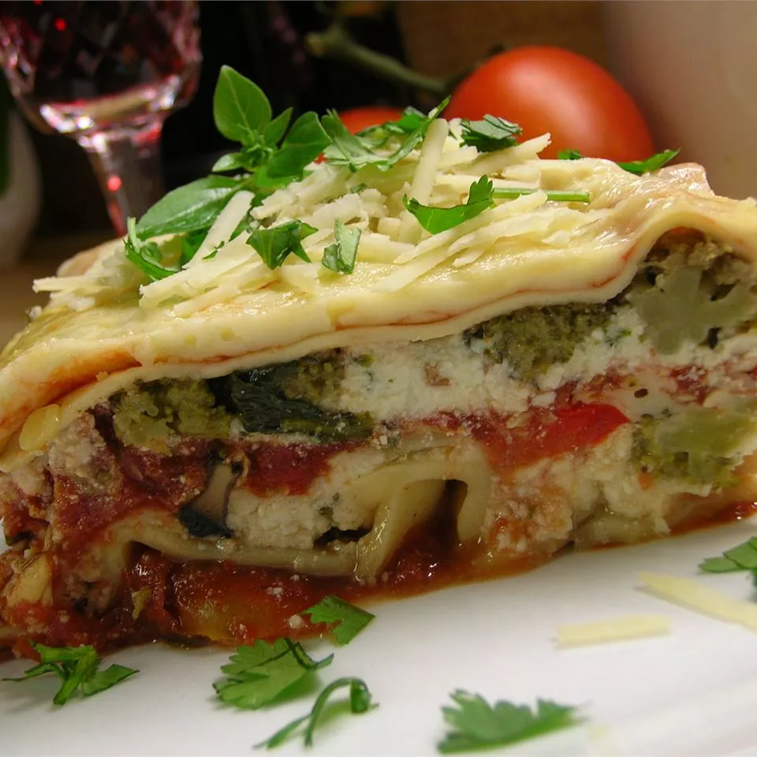

Hearty Vegetable Lasagna

Description
This hearty, vegetable lasagna is the only lasagna my husband will eat. We love it! Hope you all enjoy it as much as we do.
Ingredients
- 1 (16 ounce) package lasagna noodles
- 2 tablespoons vegetable oil
- 1 pound fresh mushrooms, sliced
- ¾ cup chopped green bell pepper
.......
Steps
- Cook lasagna noodles in a large pot of boiling water for 10 minutes, or until al dente. Rinse with cold water, and drain.
- Heat oil in a large saucepan. Add mushrooms, green peppers, onion, and garlic; cook and stir until tender, about 5 minutes. Stir in pasta sauce and basil; bring to a boil. Reduce heat, and simmer for 15 minutes.
- While the sauce is simmering, mix together ricotta, 2 cups mozzarella cheese, and eggs in a medium bowl.
- Preheat the oven to 350 degrees F (175 degrees C). Grease a 9x13-inch baking dish.
.......